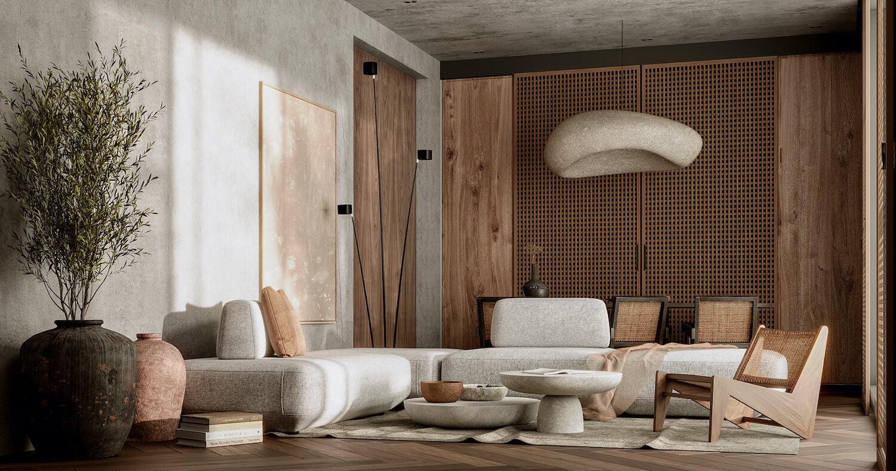
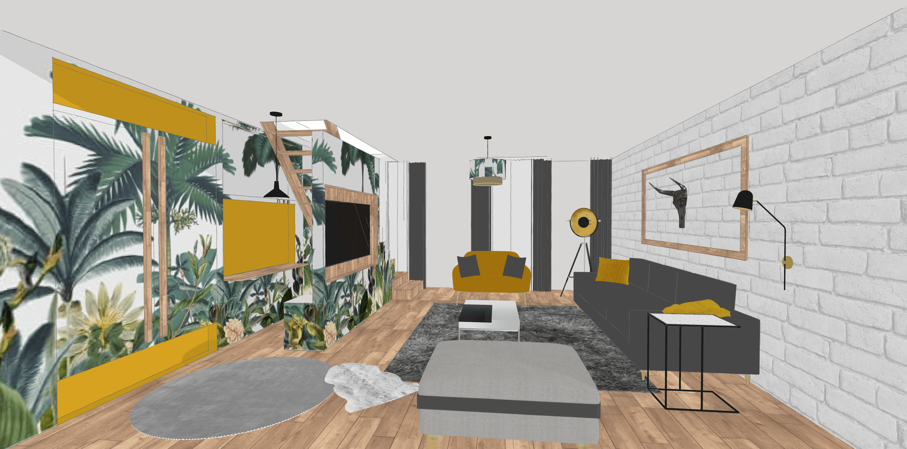

En octobre 2022, j’ai créé ma micro entreprise « Griffonne » avec une conviction : notre cadre de vie a un effet sur notre état intérieur, et inversement.
J’ai connu le doute, l’errance puis la nécessité urgente de prendre soin de moi. Lorsqu’initialement je poursuivais mes études de Biologie moléculaire, je pensais que contribuer à développer des médicaments était le seul moyen de parvenir à aider les autres à vivre mieux, j’ai compris après un burnout que la vie est plus complexe que cela.


M’arrêter après avoir décroché mon Master a été un mal pour un bien. J’ai eu l’opportunité de réaliser que, livrée à moi-même, mon réflexe naturel était de reprendre un crayon et un papier, comme j’aimais déjà tant le faire en grandissant. Pour la première fois, je prenais le temps de lever les yeux, de regarder autour de moi, et je me mettais à vouloir organiser mon espace vital et l’améliorer.
Chaque mesure, chaque recherche d’idées astucieuses pour m’aider à solutionner une problématique de rangement, chaque choix de matière et de couleur me donnait aussi l’impression d’être en train de ré agencer ma vie, de reprendre le contrôle sur moi-même, d’assainir l’air que je respirais, et de devenir toujours plus en capacité de réparer mes fêlures.

J’étais aussi par chance bien entourée pour me relever, et j’ai suivi en parallèle un long processus de développement personnel qui m’a permis d’assainir à la fois ma relation avec moi-même et par conséquent mon rapport aux autres.
Petit à petit, j’étais sollicitée par mon entourage pour les conseiller et réaliser les plans des pièces qu’ils souhaitaient agencer et décorer. Constatant leur satisfaction, je me rendais avec joie à l’évidence. Je pouvais aider les gens à se sentir mieux autrement qu’à travers des médicaments.

Quand j’ai compris que je ne souhaitais plus faire autre chose que ça, j’ai décidé d’asseoir ma légitimité dans cette reconversion en contractant une formation à distance dont la flexibilité m’a permis de composer alors avec mon statut de jeune maman au foyer. J’ai réussi à valider avec succès mon certificat professionnel de décoratrice d’intérieur assorti de trois spécialités, le Home Staging, le Feng Shui et le DIY.
Je serai heureuse de vous aider en concevant une décoration qui vous ressemble, dans la limite du budget que vous avez prévu. Une décoration à votre image qui vous permettra de vous sentir en harmonie avec votre intérieur, de vous l’approprier ou de vous le réapproprier.

« Parce que la beauté est à l’intérieur »
Griffonne
Griffonne